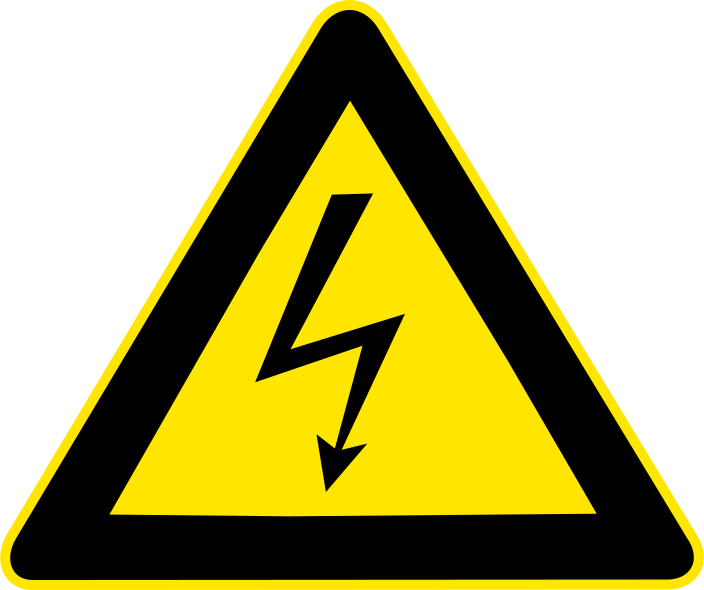
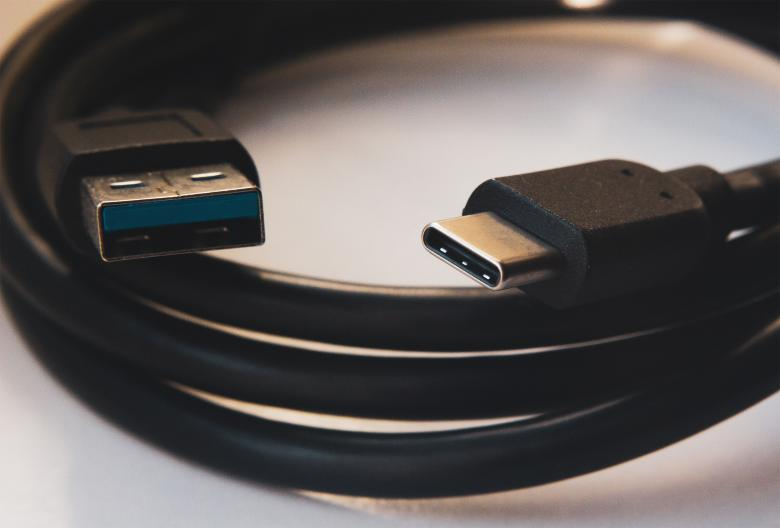
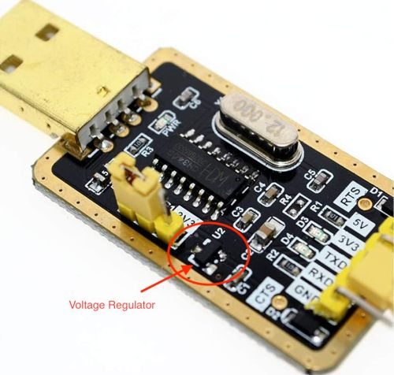
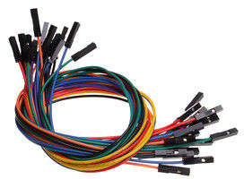
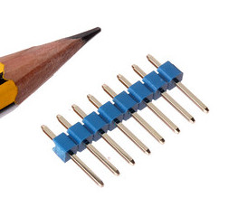
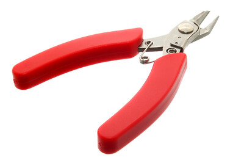
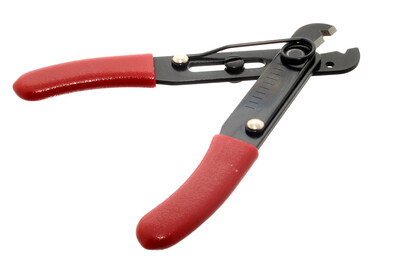
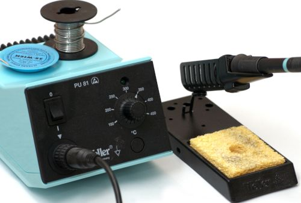
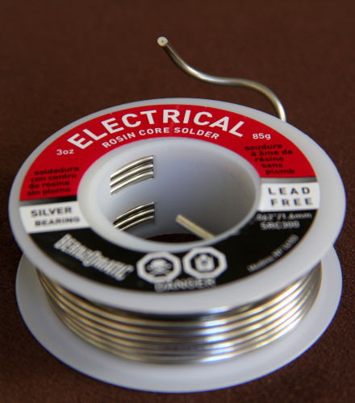
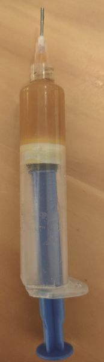

Physically Connecting to your Device¶
The most difficult part of setting up a new ESPHome device is the initial installation, which requires connecting your ESP device to a computer using a cable.
You only need to do this once per device. Once you’ve flashed ESPHome on a device, you can use the OTA updater to upload new versions or configuration changes wirelessly.
ESPHome runs on a wide variety of devices, so it’s hard to list any specific set of tools that you need or to give instructions on how to connect. This guide tries to cover some of the more common flashing situations. If your device doesn’t fit any of these situations, try and find a guide for your specific device in the devices guides or elsewhere on the internet.
Connecting to the ESP¶
There’s a wide variety of situations you might find yourself in, each of which requires you do something different to connect your computer to the ESP in order to flash it.
You only need to physically connect to it once. Once you’ve flashed your device and connected it to your WiFi, you can use the OTA (over-the-air) update component to install software remotely.
Programming a ESP-based device is done by connecting the serial port on the ESP8266/ESP32 to your computer through a USB to serial adapter. Some devices have adapter built into the circuit board, in which case things are a bit easier.
Note
If the serial port is not showing up, you might not have the required drivers installed. The model number you need is engraved on the chip connected to the USB port, or in the store listing. These drivers work for most ESP devices:
With the exception of the situation where you have a USB port, you need to make five electrical connections to program an ESP-based board:
+3.3V, or occasionally +5.0V
GND, or ground
TX
RX
IO0, used to place the board into programming mode. This is often a button that you need to hold down while connecting the power (+3.3V).
RX and TX are frequently swapped. If programming your board doesn’t work the first time, try flipping the wires connected to those pins before trying again.
Warning
{kind=link}
Do not connect your device to mains electricity while following this guide. If your device is open and plugged directly into the wall, you’ll be a single touch away from being electrocuted.
Note that this does not apply if your device uses a separate “wall wart” or a power brick. Using an external power supply while flashing is an advanced topic not covered here, but does not pose any safety risk.
You are solely responsible for your own safety. If you feel something is wrong or are uncomfortable with continuing, stop immediately.
USB Port on Device¶
{kind=link}
A device with a USB port and a serial adapter built-in¶
Development boards often come with a USB port built in. This USB port is connected to a serial adapter, so you don’t need a separate serial adapter. You can use just a USB cable to connect it to your computer to program it.
This isn’t likely to be very useful without connecting additional sensors to it by either soldering or using a breadboard, but you do not need anything else to just flash ESPHome on it.
Pre-soldered Programming Header¶
{kind=link}
A device that comes with programming headers pre-installed¶
In this situation, you’ll need just jumper wires and a USB to serial adapter. You don’t need to solder anything, that’s already been done by the factory.
Unpopulated Programming Header¶
{kind=link}
A device that has a spot for programming headers on the circuit board¶
You can probably get away with jumper wires and a USB to serial adapter. You can place the male end of the wires directly into the circuit board and hold them into place with your hand until you’re done flashing the board.
These headers sometimes have writing on the circuit board indicating what each pin is. If your header does not, either look it up on the internet, or use a multimeter in continuity mode to figure it out (advanced topic).
Solder-filled Programming Header¶
{kind=link}
A set of programming headers that are filled with solder¶
You’ll need a USB to serial adapter, jumper wires, a soldering iron, and probably solder and some breakaway headers if your board looks like this.
You can try placing the jumper wires in the right place, but you’ll have trouble holding them without having them slide around. You’ll want to solder a header onto the programming port in this situation.
These headers sometimes have writing on the circuit board indicating what each pin is. If your header does not, either look it up on the internet, or use a multimeter in continuity mode to figure it out (advanced topic).
Module Only¶
{kind=link}
An ESP8266 module with programming wires soldered on¶
If the device has a module but no programming headers, things get a bit tricky. You’ll need a USB to serial adapter, jumper wires, wire strippers, wire snips, a soldering iron, solder, and a bit of flux would help.
Cut the jumper wires, strip a bit off the end, and then solder them onto the module. You can find the correct places to solder the wires by looking up the module model number on the internet. You can find one list of commonly used modules here.
Bare Chip¶
{kind=link}
A bare ESP8266 IC with no programming header¶
This is an advanced topic and won’t be covered in detail, but you have three options:
You can hope that your device is supported by an OTA conversation tool. Most these tools have been broken by vendors, and the ESPHome community can’t help you with using these tools.
If the programming wires connect to a larger component like a resistor, you can solder or clip your jumper wires to that larger component.
You can use your amazing microsoldering skills to connect directly to the IC.
Materials¶
Because we’re working with hardware, we might need some additional tools, depending on the situation. Already have all this stuff? You’re good to go!
But if you don’t, don’t go out and buy everything just yet. Read through the guide first and make a list of everything you need. Different situations will require different parts and tools.
Name |
Purpose |
Approx. cost |
Picture |
|---|---|---|---|
If your target device has a USB port on it, you need the appropriate cable to connect to it. |
$3 to $10 |
 | |
Serial communication is a simple way of talking to other devices, like the ESP32/ESP8266 you’re flashing. But your computer probably doesn’t have this capability built-in. “Serial”, “UART”, “TTL”, and “COM” are all more-or-less synonyms. There are many different types of these, so don’t worry if yours doesn’t look exactly like the picture. However, you do need one with a voltage regulator. The Tasmota website provides a good set of suggestions on what to buy. |
$3 to $10 |
 | |
Used to connect two things together electrically. The male end has metal protuding and is plugged into the female end of a wire or board. They come in varying lengths too, but for our purposes, any length will do. |
$3 to $8 for a pack |
 | |
Soldered to a PCB to provide a way to connect jumper wires. The distance between the metal pins is known as the pitch, and is usually 2.54mm for what we’re doing. This sort of header can be cut to the correct length along the groves. |
$3 to $8 for a pack |
 | |
Used to cut wire. These can often be subsituted by a knife or scissors, but be careful not to hurt yourself. |
$5 to $15 |
 | |
Used to remove the insulation from wires, leaving the conductive metal interior exposed. These can often be subsituted by a knife, scissors, or fingernails, but be careful not to hurt yourself. There are many different styles, not just that in the picture. You’ll want something that works with fairly thin wire, about 20 AWG to 26 AWG. |
$5 to $15 |
 | |
Used to melt metal, called solder, to connect things together in an electrically conductive way. You’ll want something with temperature control. Other than that, there are many varying opinions and options here. The /r/AskElectronics wiki has some good suggestions. The following would serve you well, although be careful to buy from a reliable source:
|
$60 to $120 |
 | |
Molten metal used to join things in an electrically conductive way. There are two types, leaded and lead-free. Leaded melts at a lower temperature and is a little easier to work with, but is hazardous to the environment (but not to humans in this form). Electronics solder also usually has a “rosin core”, which helps clean the surfaces to allow the solder to stick. You absolutely do not want plumbing solder, also known as “acid core” or “silver solder”. It needs much higher temperatures than we can safely use here. |
$8 to $12 |
 | |
Used to clean the metal surfaces before soldering them together. Sometimes the rosin core of the solder doesn’t provide enough, so you’d want add some extra. This stuff is helpful, but probably not needed for this guide since we won’t be doing any advanced soldering. If you do buy it, you absolutely do not want plumber’s flux. It will destroy your circuit boards. |
$8 to $12 |
 |